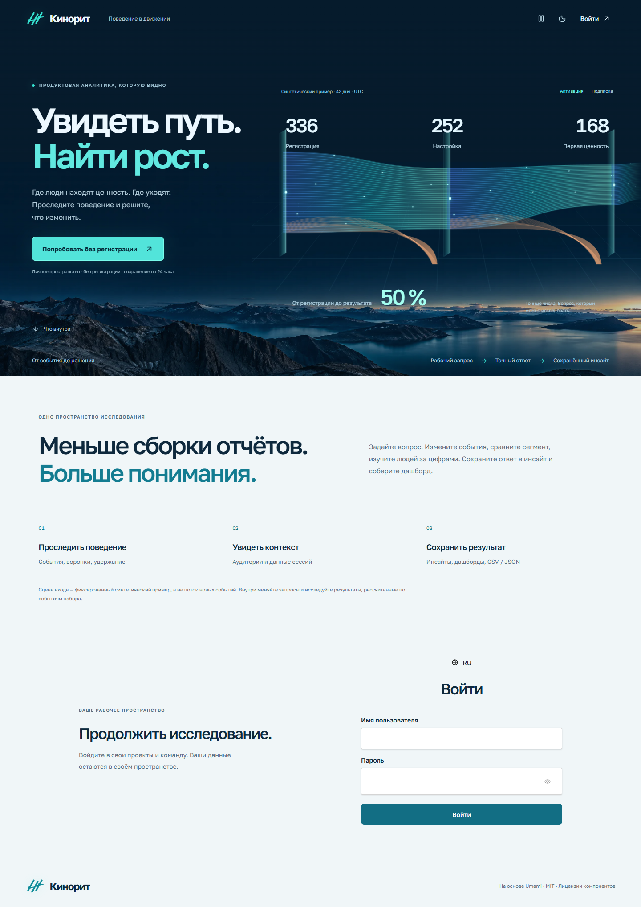
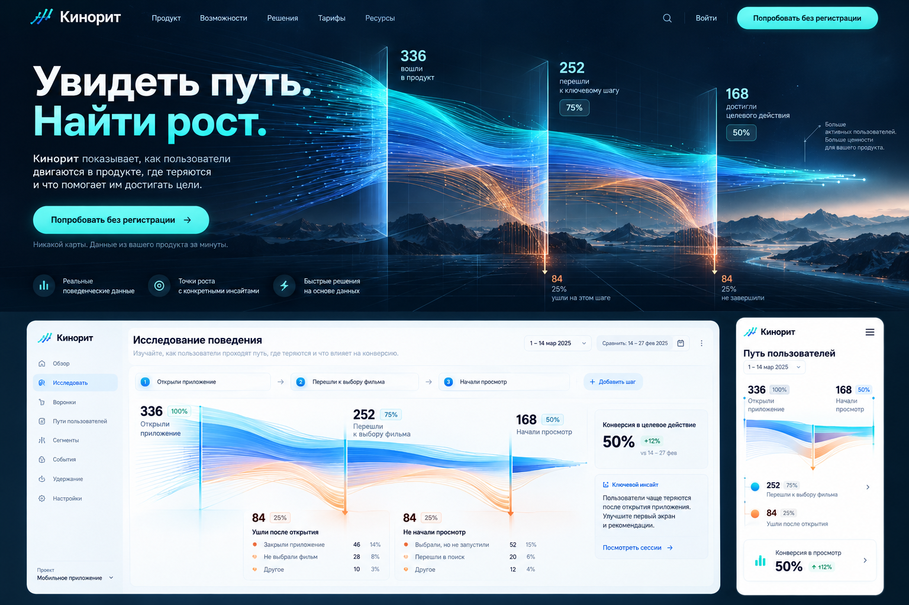
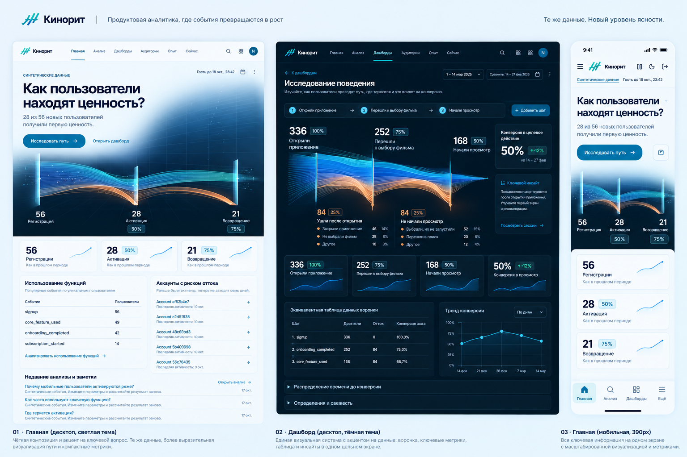
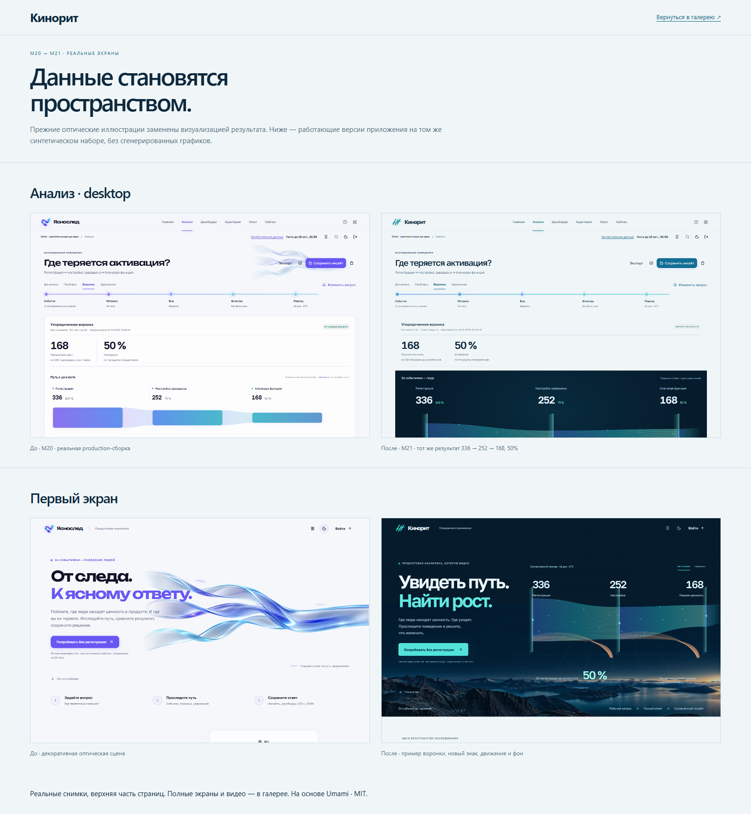

Работающее приложение · не генерация видео
Запись Chrome 155, native production, 1440 × 1000. Видны смена синтетической цели, раскрытие графика, навигация, редактор запроса, пауза и тёмная тема.
Реальные снимки · код интерфейса ed41c955

Вход · светлая тема · компьютер
28 реальных состояний проверены на переполнение и серьёзные/критические нарушения axe. Дополнительные размеры: 320, 768, 1920 и 2560 px. Данные в гостевом пространстве синтетические; остальные пространства работают со своими источниками.
imagegen · макеты направления, не рабочие экраны


Из макетов перенесены композиция, цвет и принцип пути. Вымышленные причины оттока, дельты и sparklines не выдаются за данные и не скопированы в продукт.
